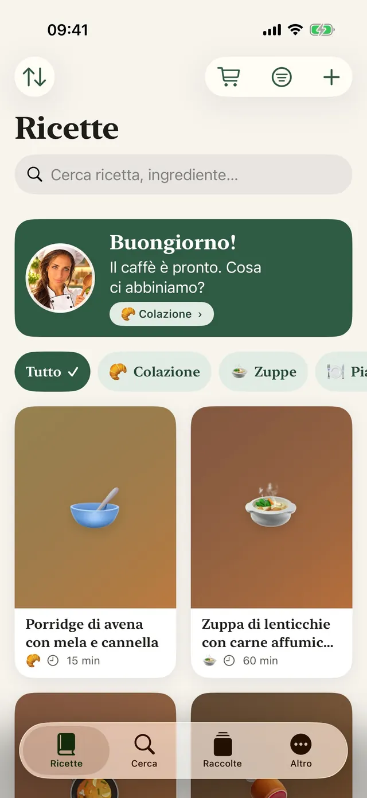
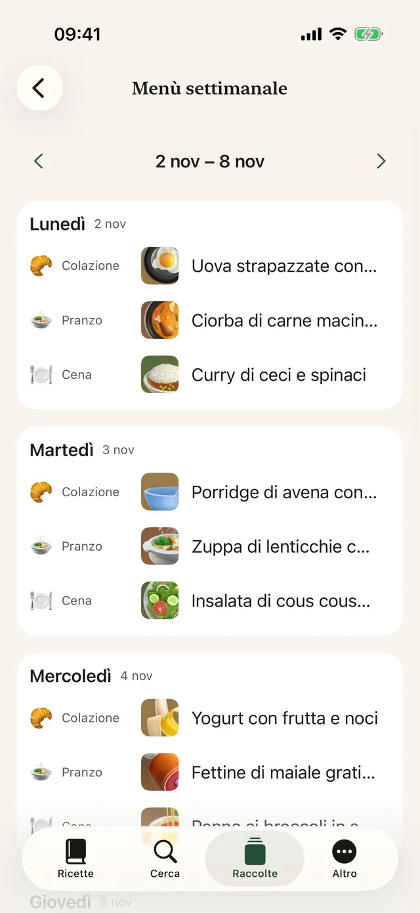
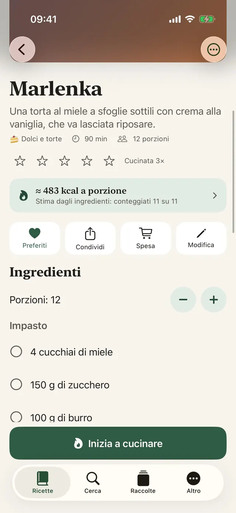
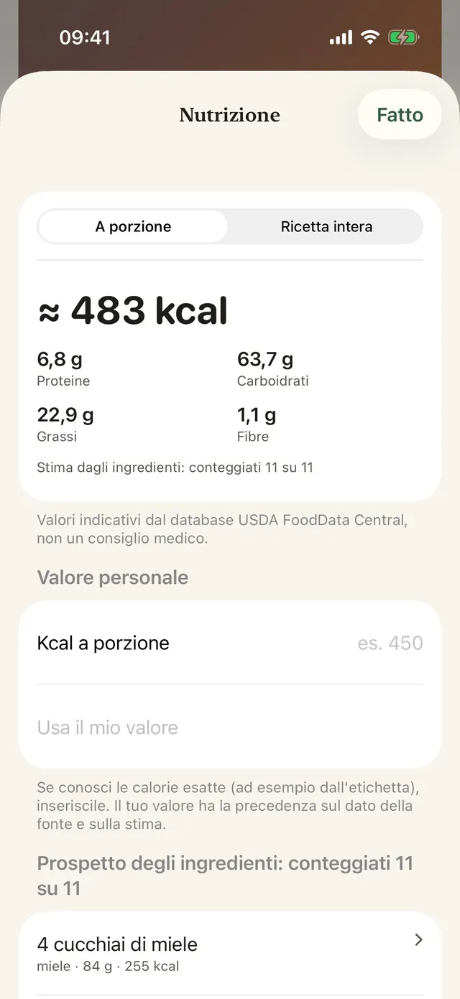
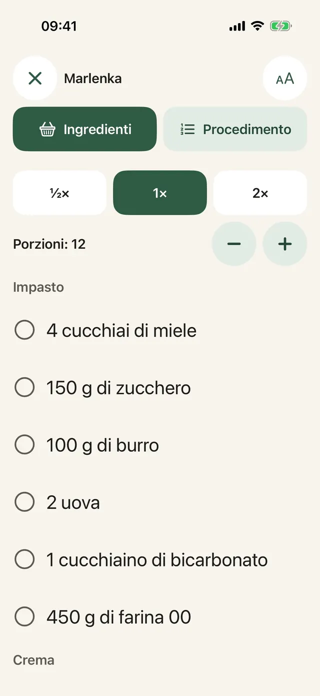
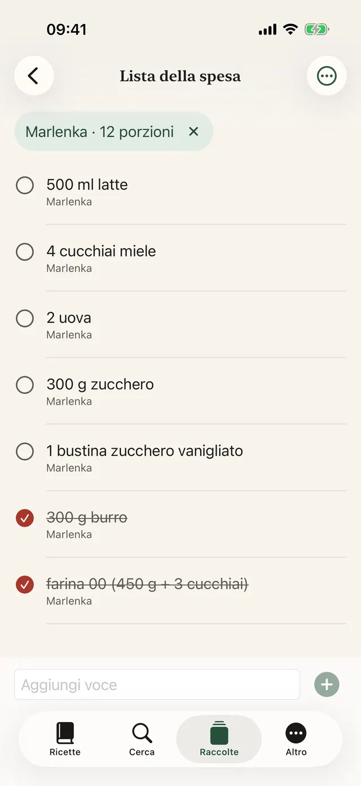
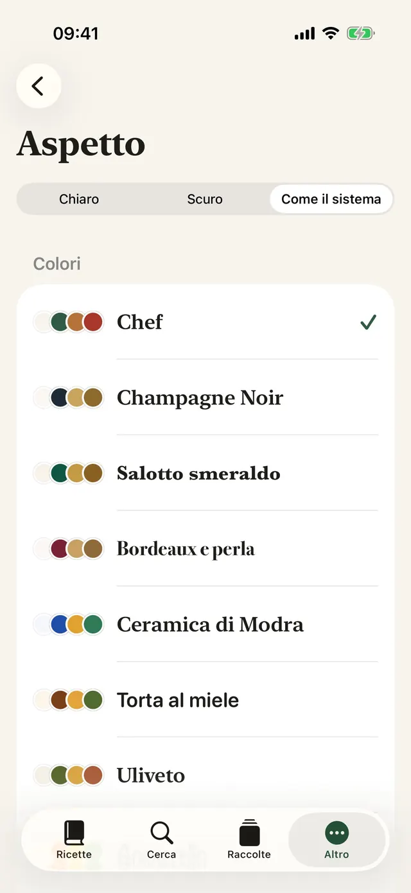
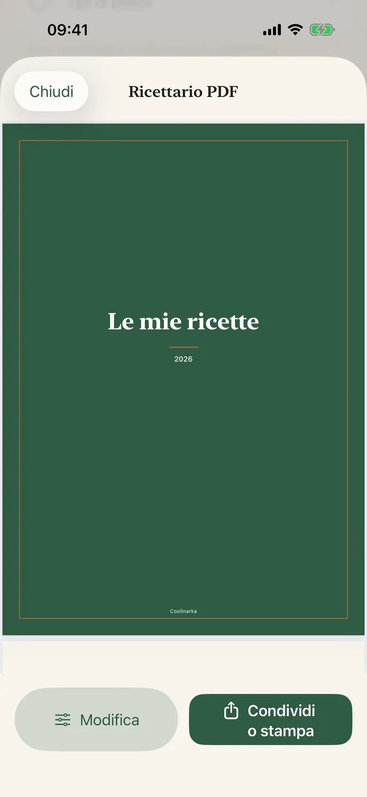
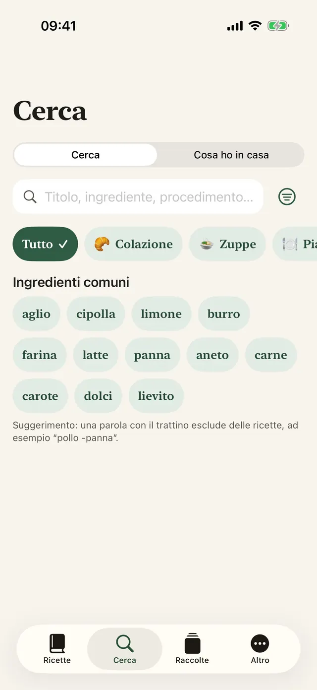
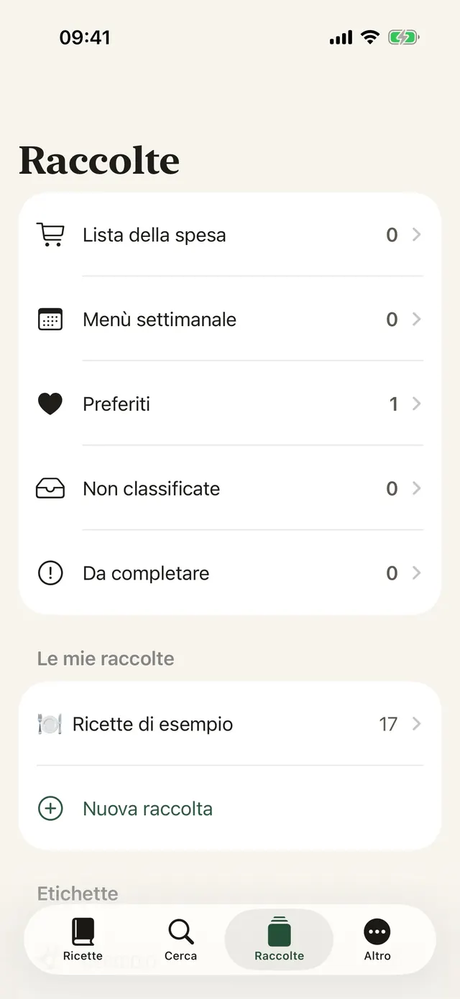

Salvi con un tocco
In Instagram, Facebook o Safari tocca Condividi e scegli Coolinarka.
Salva una ricetta da Instagram, Facebook, dal web o da un video. Coolinarka la trasforma in ingredienti e passaggi chiari e ti accompagna passo dopo passo mentre cucini.
Per iPhone e iPad, gratis. La versione per Android arriverà presto su Google Play.


Ecco come appare una ricetta in un post sui social. Un tocco ed è tutto in ordine, con le porzioni da ricalcolare come vuoi.
😍😍 Penne ai broccoli in salsa cremosa!!! 400 g di penne, 1 broccolo, 250 ml di panna da cucina, 2 spicchi di aglio, 50 g di parmigiano, sale e pepe ... Cuocere le penne secondo le istruzioni, aggiungendo le cimette di broccolo negli ultimi 4 minuti. Rosolare brevemente l'aglio nell'olio, versare la panna e scaldare. Scolare la pasta con i broccoli, mescolarla alla salsa e cospargere con il parmigiano. 🔥🔥 #penne #food
Una pasta semplice che piace anche ai bambini.
Una ricetta di esempio dall'app. I post veri sono spesso ancora più caotici e Coolinarka se la cava anche con quelli, persino da uno screenshot o da un video.
Testo grande, un passaggio sullo schermo e il display non si spegne. Avvii il timer con un tocco, anche con le mani sporche di farina.
Nella demo il timer corre più veloce.
Cuocere le penne secondo le istruzioni, aggiungendo le cimette di broccolo negli ultimi 4 minuti.
Gli ingredienti di più ricette si sommano. Cambia paese e guarda la parola da cercare tradursi nella lingua del negozio, anche se la ricetta è in un'altra lingua.
L'articolo lo aggiungi al carrello nel negozio. L'app non ha accesso al tuo account del negozio. La disponibilità dipende dal tuo indirizzo.
Una romana a Madrid, un milanese a New York. In un negozio straniero basta un piccolo equivoco e nel carrello finisce tutt'altro. Coolinarka cerca nella lingua del negozio, così a te non succede. Sai cosa ti porteresti a casa?
Nove temi con la loro icona, modalità scura e testo più grande. Scegline uno e cambia tutta questa pagina, proprio come l'app.
Schermate vere, nella lingua in cui stai leggendo questa pagina.









In Instagram, Facebook o Safari tocca Condividi e scegli Coolinarka.
Da un video o da una registrazione dello schermo nasce una ricetta, il parlato viene trascritto direttamente sul telefono.
Pianifica tutta la settimana, riempi gli spazi vuoti con i preferiti e manda tutto alla lista della spesa.
Tipi di piatto, etichette, preferiti e raccolte tue.
Per nome, ingredienti o procedimento, senza badare agli accenti.
Il widget Cosa cucinare oggi nella schermata Home e nella schermata di blocco e Siri: «Cosa cucino in Coolinarka».
Chi la riceve la apre in Coolinarka con la foto. Le tue valutazioni e note restano fuori.
Ritaglio, rotazione e filtri.
Le ricette si sincronizzano con iCloud tra i dispositivi con lo stesso account Apple.
Fai un backup della tua raccolta o portala in un'altra app.
Comprese le ricette di esempio e la stima delle calorie.
L'app non ha account, pubblicità né tracciamento. Le ricette restano sul tuo dispositivo e nel tuo iCloud privato, lo sviluppatore non vi ha accesso.
Ricette, importazione, esportazione, backup, iCloud e modalità cucina non costano nulla. Plus è un acquisto una tantum senza abbonamento e si può condividere in famiglia.
I valori sono indicativi e non costituiscono un consiglio medico. Il calcolo avviene sul dispositivo.
Scarica Coolinarka e salva la tua prima ricetta oggi stesso.
Per iPhone e iPad, gratis. La versione per Android arriverà presto su Google Play.